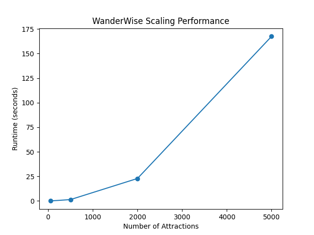
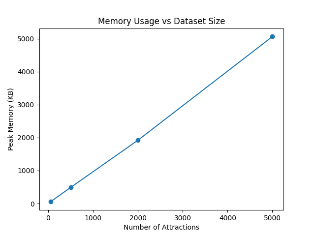

| Number of Attractions (N) | Runtime (seconds) | Peak Memory (KB) |
|---|---|---|
| 50 | 0.0163s | 52.1 KB |
| 500 | 1.48s | 488.5 KB |
| 2,000 | 22.28s | 1,918.8 KB |
| 5,000 | 155.91s | 5,061.6 KB |

X: Number of Attractions | Y: Runtime (seconds)

X: Number of Attractions | Y: Peak Memory (KB)
benchmark_results.csv - Raw performance metricsruntime_plot.png - Runtime visualizationmemory_plot.png - Memory visualizationGenerated: 2/28/2026 | WanderWise Project Group 4